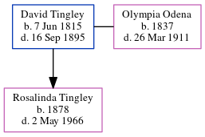

David Tingley 1815 - 1895
[ Home ] | [ Calendar ] | [ Surnames Index ] | [ Census Index ] | [ Family History ]David Tingley, the husband of Olympia Eugenie Odena (the three times great-aunt of Michele Copp (née Phillips)), was born in Sackville, Westmoreland, New Brunswick, Canada on Jun 7, 18151,2 and married Olympia (with whom he had 1 child, Rosalinda) in Harvey, Albert, New Brunswick, Canada in 1876.
During his life, he was living in Littleton, Aroostook, Maine, USA in 18801; and in Maine, Massachusetts, New Hampshire, and Vermont2. he arrived in 1872.
He died on Sep 16, 1895 in Littleton.
Children
- Rosalinda was born in 1878
Citations
- 1880 United States Federal Census Online publication - Provo, UT, USA: The Generations Network, Inc., 2005. 1880 U.S. Census Index provided by The Church of Jesus Christ of Latter-day Saints © Copyright 1999 Intellectual Reserve, Inc. All rights reserved. All use is subject to the limite
- Selected U.S. Naturalization Record Indexes, 1791-1966 (Indexed in World Archives Project) Online publication - Provo, UT, USA: Ancestry.com Operations, Inc., 2010. This collection was indexed by Ancestry World Archives Project contributors.Original data - Alphabetical Index to Declarations of Intention of the U.S. District Court for the Souther
Family Tree
Generated by ged2site. Last updated on Jun 6, 2024